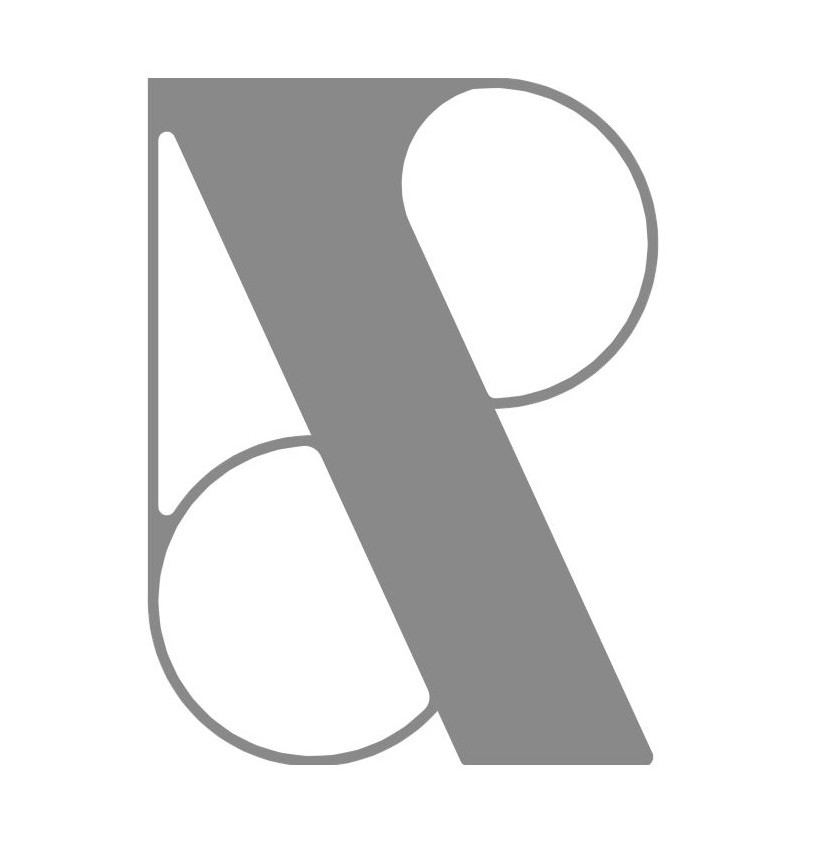

Location
Ci sposeremo sabato pomeriggio alle 14.30, con rito civile, nella Sala degli Stucchi di Ca' Farsetti, San Marco 4136, Venezia. Proseguiremo i festeggiamenti all'hotel Excelsior,Lungomare Guglielmo Marconi 41, Lido di Venezia.
import CountDown from 'react-native-countdown-component'; render() { return (Il giorno del Matrimonio
"Il matrimonio è un pranzo interminabile con il dolce servito per primo"
-

14.30
Rito civile
Il rito civile sarà nella sede del comune di Venezia chiamato Ca'Farsetti a Rialto. L'accesso alla "Sala degli Stucchi" avviene dall'ingresso presso il lato del Canal Grande in Riva del Carbon.
-

15.30
Barca
Dopo la cerimonia gli sposi andranno via con un Taxi acqueo ed una barca vi attenderà per accompaganrvi alla prossima location.
-

16.30
Excelsior
La festa continuerà all'Hotel Excelsior, in Lungomare Guglielmo Marconi 41, in particolare al piano primo nella Sala degli Stucchi.
-

17.00
Brindisi
Prima di cominciare la festa ci sarà un brindisi in "terrazza dei fiori" con il discorso dei testimoni.
-
18.30
Cena
Per la cena ci sposteremo nella famosa "Sala Stucchi" ed abbiamo scelto per voi un menu a base di pesce, se avete intolleranze alimentai o allergie fatecelo sapere tramite messaggio o mail, così da poter studiare per voi un menù dedicato.
-

Album di Matrimonio
"Carciate le foto sul nosto album digitale"
Durante la cerimonia potete caricare tutti le foto e condividerle con gli altri invitati sul nostro album
"Album"Regalo di Nozze
"Aiutateci a scappare insieme!"
Alla fine voleremo in USA! se lo desiderate, potete contribuire alla realizzaizone della nostra Luna di Miele.
Iban XIT93R0200802015000105967404
Intestatari: Bellotto Caterina e Tommaso Rigon - Causale: Matrimonio Rigotto.
Contatti
per ogni dubbio e per comunicarci eventuali allergie alimentari o esigenze particolari scriveteci
Caterinabellotto@gmail.com - +39 348 0584371
Tommaso.rigon@gmail.com - +39 320 4288682